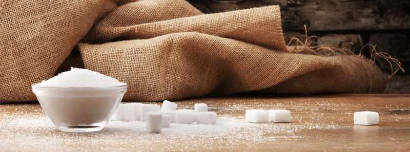

Transitioning away from Refined Sugar (+PDF)
Let’s start this off with a jaw-dropping statement. Did you know that sugar is found in 74% of packaged foods in our supermarkets? Regular sugar consumption can lead to serious long-term health problems, including excess weight gain, hormonal imbalance, skin and dental issues, osteoporosis, diabetes, and even some forms of cancer. One of the main problems with sugar, and processed fructose, in particular, is the fact that your liver has a very limited capacity to metabolize these substances, which can lead to non-alcoholic liver disease.

Let’s Not Sugarcoat Things
It is said that sugar is eight times as addictive as cocaine. When we eat sugary foods, we tend to feel good temporarily. And this is because it creates a biological disorder that is driven by our hormones and neurotransmitters which fuel sugar and carb cravings. It activates our tongue’s taste receptors, which then signals the brain, lighting up reward pathways causing a surge of feel-good hormones, like dopamine (the same chemical released in response to sex and drug use), to be released. So go ahead and have another cocaine cookie, a morphine muffin, or a smack soda! Maybe that’s a tad bit too extreme, or is it? How addicted to sugar are you? Have you ever tried to stop consuming sugar?
Repeated access to sugar over time leads to prolonged dopamine signaling, greater excitation of the brain’s reward pathways and a need for even more sugar is required to activate all of the midbrain dopamine receptors like before. The brain becomes tolerant to sugar. Therefore, more is needed to attain the same “sugar high.”
- The overconsumption of sugar is increasingly being linked to brain-related health issues such as depression, learning disorders, memory problems, and overeating.
- Research suggests the consumption of sugar and sweets can trigger reward and craving states in your brain similar to addictive drugs.
- Not all sugars have identical effects. Fructose has been shown to activate brain pathways that increase your interest in food, whereas glucose triggers your brain’s satiation signal. (source)
- There is growing scientific consensus that one of the most common types of sugar, fructose, can be toxic to the liver, just like alcohol. (source)
What I am sharing here hardly begins to break the surface on all the negative effects that sugar has on our bodies. You can do further research on this topic if you want to know all the nitty-gritty facts. I am here to help encourage you to start substituting sugar-laden foods with healthier food/drink choices.
© AmieSue.com